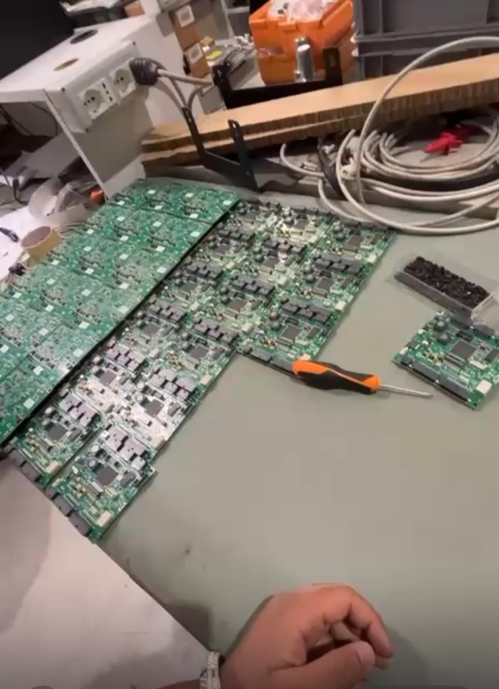
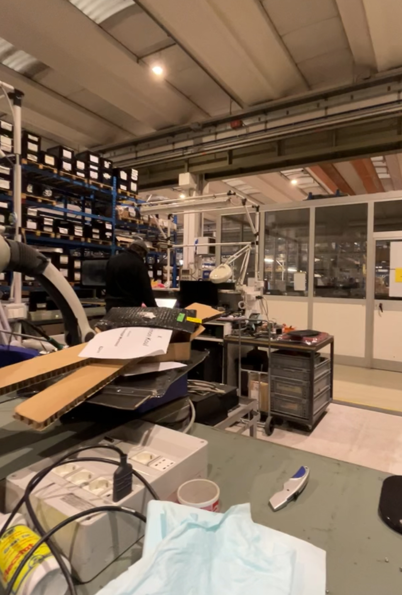

THE TEAM
I was assigned to two different teams.
During the first days of the intership, I worked with the administrative team, where I did customer service.
In the second part, I joined the repair team, where I dealed with products returned by customers due to manufacturing defects or damage.
In both teams, I was supervised by the same co-manager.


Torna alla pagina precedente
Vai alla pagina successiva